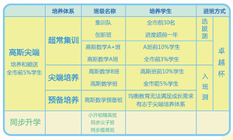
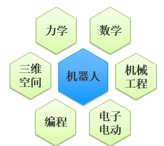

<div class="wrap mt30 pb60 ovh">
  <div class="content lh26">
    <p class="in28"></p>
    <p><strong>【卓越大语文】</strong></p>
    <p>卓越大语文，以提高学生语文素养、开阔其视野、铸就其沉静而自信的人格为目的。大语文打破公立学校惯常的语文授课方式，让学生通过文人轶事、文学经典、历史背景等形式学习语文，在文学的熏陶下，喜欢上语文。它旨在给学生以人文精神和人文情怀的熏陶，让学生爱上语文后，获得自主学习的持续动力。同时让学生从中获得成就感和自信。这些童年培养的兴趣将伴其一生的学习。</p>
    <p><strong>■</strong>&nbsp;<strong>教学理念：</strong></p>
    <p><strong>爱上语文，做有修养的人</strong></p>
    <p>&nbsp;</p>
    <p><strong>■</strong>&nbsp;<strong>课程体系：</strong></p>
    <p style="margin-left:39.0pt;">l 三大主线</p>
    <p>中国古代文学史——系统积累历史文化常识与名篇佳作，感受古代作品的语言美和意境美</p>
    <p>中外近现代文学名著——全面积累西方文史与地理知识，开拓视野，建立比较文学思维</p>
    <p>新派作文——谋求作文新思路，积累写作新方法，自如驾驭文章创作，将文史知识转化成文章</p>
    <p>&nbsp;</p>
    <p><strong>■</strong>&nbsp;<strong>课程分类：</strong></p>
    <p><strong>专题课程：中华写字课堂</strong></p>
    <p><strong>小学1-6年级课程：</strong></p>
    <p>&nbsp;</p>
    <table border="1" cellpadding="0" cellspacing="0" style="text-align: left;">
      <tbody>
        <tr>
          <td style="width:54px;">
            <p>适合年级</p>
          </td>
          <td style="width:246px;">
            <p style="text-align: center;">一二年级</p>
          </td>
          <td style="width:221px;">
            <p style="text-align: center;">三四五年级</p>
          </td>
          <td style="width:174px;">
            <p style="text-align: center;">六年级</p>
          </td>
        </tr>
        <tr>
          <td style="width:54px;">
            <p>课程重点</p>
          </td>
          <td style="width:246px;">
            <p>大语文启航——让新入学的孩子知书达礼、开阔视野</p>
          </td>
          <td style="width:221px;">
            <p>大语文领航——通览文学史，爱读书爱表达，积累丰硕</p>
          </td>
          <td style="width:174px;">
            <p>大语文冲刺——笑傲小升初，一入中学，遥遥领先</p>
          </td>
        </tr>
        <tr>
          <td rowspan="3" style="width:54px;">
            <p>教授内容</p>
          </td>
          <td style="width:246px;">
            <p>国学启蒙：</p>
            <p style="margin-left:18.0pt;">①&nbsp;&nbsp;&nbsp; 国学经典诵读</p>
            <p style="margin-left:18.0pt;">②&nbsp;&nbsp;&nbsp; 古代文化点滴</p>
            <p style="margin-left:18.0pt;">③&nbsp;&nbsp;&nbsp; 成语、谚语积累、识字量突破</p>
          </td>
          <td style="width:221px;">
            <p>古代文学：</p>
            <p style="margin-left:18.0pt;">①&nbsp;&nbsp;&nbsp; 唐代文学</p>
            <p style="margin-left:18.0pt;">②&nbsp;&nbsp;&nbsp; 宋元文学</p>
            <p style="margin-left:18.0pt;">③&nbsp;&nbsp;&nbsp; 先秦•两汉•魏晋南北朝文学</p>
            <p>&nbsp;</p>
          </td>
          <td rowspan="3" style="width:174px;">
            <p style="margin-left:18.0pt;">①&nbsp;&nbsp;&nbsp; 六大名著专题精讲</p>
            <p style="margin-left:18.0pt;">②&nbsp;&nbsp;&nbsp; 中国古代文学汇总</p>
            <p style="margin-left:18.0pt;">③&nbsp;&nbsp;&nbsp; 世界名著专题赏析</p>
            <p style="margin-left:18.0pt;">④&nbsp;&nbsp;&nbsp; 外国各类文学汇总</p>
            <p style="margin-left:18.0pt;">⑤&nbsp;&nbsp;&nbsp; 主题作文精讲</p>
            <p style="margin-left:18.0pt;">⑥&nbsp;&nbsp;&nbsp; &nbsp;小升初创新小作文拔高</p>
          </td>
        </tr>
        <tr>
          <td style="width:246px;">
            <p>绘本阅读：</p>
            <p style="margin-left:18.0pt;">①&nbsp;&nbsp;&nbsp; 读懂故事</p>
            <p style="margin-left:18.0pt;">②&nbsp;&nbsp;&nbsp; 叙述故事</p>
            <p style="margin-left:18.0pt;">③&nbsp;&nbsp;&nbsp; 体味故事</p>
          </td>
          <td style="width:221px;">
            <p>外国文学：</p>
            <p style="margin-left:18.0pt;">①&nbsp;&nbsp;&nbsp; 文明古国文学</p>
            <p style="margin-left:18.0pt;">②&nbsp;&nbsp;&nbsp; 英法文学</p>
            <p style="margin-left:18.0pt;">③&nbsp;&nbsp;&nbsp; 世界近现代文学</p>
          </td>
        </tr>
        <tr>
          <td style="width:246px;">
            <p>写作表达：</p>
            <p style="margin-left:18.0pt;">①&nbsp;&nbsp;&nbsp; 写作规范丰富</p>
            <p style="margin-left:18.0pt;">②&nbsp;&nbsp;&nbsp; 敢于表达</p>
            <p style="margin-left:18.0pt;">③&nbsp;&nbsp;&nbsp; 善于表达</p>
          </td>
          <td style="width:221px;">
            <p>创新小作文：</p>
            <p style="margin-left:18.0pt;">①&nbsp;&nbsp;&nbsp; 片段作文锤炼</p>
            <p style="margin-left:18.0pt;">②&nbsp;&nbsp;&nbsp; 基础描写与叙事</p>
            <p style="margin-left:18.0pt;">③&nbsp;&nbsp;&nbsp; 描写叙事技法进阶</p>
            <p>&nbsp;</p>
          </td>
        </tr>
      </tbody>
    </table>
    <p>&nbsp;</p>
    <p><strong>■</strong>&nbsp;<strong>课程特色： </strong></p>
    <p>&nbsp;</p>
    <p style="margin-left:42.0pt;">l&nbsp; 课设匠心独具</p>
    <p style="margin-left:21.0pt;">采用纵览式的教法，从文化发展、再到时代特点、社会背景、作者生平、技术流派，再落实到篇章、段落，最后到句法、词法、文字起源，从兴趣入手，再落实积累。</p>
    <p style="margin-left:21.0pt;">&nbsp;</p>
    <p style="margin-left:42.0pt;">l&nbsp; 教材精选创新</p>
    <p style="margin-left:21.0pt;">概览几千年来几乎全部大家名篇、中国古代文学、中国现代文学体系与精妙的创新写作技法。课内教学让文史知识深入浅出；课外拓展百科知识，推荐阅读一应俱全。</p>
    <p style="margin-left:21.0pt;">&nbsp;</p>
    <p style="margin-left:42.0pt;">l&nbsp; 积累聚沙成塔</p>
    <p style="margin-left:21.0pt;">六年，概览几千年来文学大家名篇，脑中形成文学史脉络，了解超过9个国家的文化作家，品60部名著名篇。课外特色作业本加强课堂延展，在巩固知识的基础上，提升孩子的综合素质。</p>
    <p style="margin-left:21.0pt;">&nbsp;</p>
    <p style="margin-left:42.0pt;">l&nbsp; 教师博学自信</p>
    <p style="margin-left:21.0pt;">卓越大语文教师团队超过50%是硕士，来自中山大学、中国传媒大学等985和211院校；学养深厚，拥有扎实的中国古代文学和世界文学功底，并胸怀教育梦想，爱孩子，爱教学。</p>
    <p>&nbsp;</p>
    <p><strong>【高斯数学】</strong></p>
    <p align="left">高斯数学，1—6年级数学思维尖端课程。以数学为工具，将生活问题提炼为数学问题，并引导孩子思考解决问题，帮助1-6年级的孩子拓展思维、培养良好的学习习惯、提高学习能力。相比传统数学，高斯数学还原知识全貌，由课内所学逐步延伸解决课外、生活、生产实际问题；引领学生系统学习小学阶段校内校外全部内容，真正做到因材施教，并以培养和输送广州前5%学生为目标！</p>
    <p>&nbsp;</p>
    <p><strong>■</strong>&nbsp;<strong>教学理念：</strong></p>
    <p><strong>边玩边学，爱上数学</strong></p>
    <p>&nbsp;</p>
    <p><strong>■</strong>&nbsp;<strong>课程分类：</strong></p>
    <p><strong></strong></p>
    <p><strong>■</strong>&nbsp;<strong>课程特色： </strong></p>
    <p>A.其深度广度都超越一般数学课程</p>
    <p>B.以数学为工具，辅以有趣的益智游戏边玩边学</p>
    <p>C.将生活问题提炼成数学问题，引导孩子思考解决问题，不止于截图，并回归生活。</p>
    <p>D.严选师资：博士、硕士师资，100%来自985、211名牌大学，且有竞赛获奖背景，“广州十大王牌补习老师”、“民办教育优秀教师” 等王牌名师任教</p>
    <p>&nbsp;</p>
    <p><strong>【蟹壳机器人】</strong></p>
    <p>蟹壳机器人课程由英国牛津大学的人工智能专业团队领衔，从国外引进先进的教具，根据学生年龄特征，从机械搭建开始逐步升级到编程分阶段、系统地教授智能机器人核心技术。更为重要的是通过结合Project-based Learning 和 STEM教学方式，在制作智能机器人过程中锻炼到学生动手实践能力、问题解决能力和培养创造力等这代学生最缺乏的综合能力。</p>
    <p>&nbsp;</p>
    <p><strong>■</strong>&nbsp;<strong>教学理念：</strong></p>
    <p style="margin-left:36.0pt;">•&nbsp;&nbsp;&nbsp;&nbsp;&nbsp;&nbsp; STEAM起源于美国，并在美国广泛采纳，是Science, Technology, Engineering, Arts, Mathematics 的缩写。结合PBL (Project Based Learning)项目式教学就是以解决现实问题为导向，引导学生根据所处情景条件自主寻找解决办法的教学方式。</p>
    <p style="margin-left:36.0pt;">•&nbsp;&nbsp;&nbsp;&nbsp;&nbsp;&nbsp; 研究显示对比传统知识灌输型授课方式，PBL不但提高学生的学习兴趣，更提高学生对知识的理解程度和知识的深度。</p>
    <p style="margin-left:36.0pt;">•&nbsp;&nbsp;&nbsp;&nbsp;&nbsp;&nbsp; 学生在找寻解决方案的过程当中，锻炼了批判性思维、实践动手能力、逻辑思维、发散思维、沟通合作能力等问题解决能力和创造力。</p>
    <p>&nbsp;</p>
    <p><strong>■</strong>&nbsp;<strong>课程分类：</strong></p>
    <p>专为3-12岁小孩打造的机器人课程，从简单搭建到编程，从课外兴趣到专业竞赛，蟹壳兵团的机器人课程让小孩通过玩乐掌握未来科技：</p>
    <p>幼儿园：</p>
    <p style="margin-left:36.0pt;">•&nbsp;&nbsp;&nbsp;&nbsp;&nbsp;&nbsp; 帮助培养三维立体空间感和手脑协调能力，提高观察能力和专注力，养成喜爱观察和思考的习惯</p>
    <p>小学：</p>
    <p style="margin-left:36.0pt;">•&nbsp;&nbsp;&nbsp;&nbsp;&nbsp;&nbsp; 探索丰富多彩的数学、物理、自然科学、科技知识。发展兴趣，系统学习，参加竞赛，剑指名校</p>
    <p style="margin-left:18.0pt;">中学：</p>
    <p style="margin-left:36.0pt;">•&nbsp;&nbsp;&nbsp;&nbsp;&nbsp;&nbsp; 专业机械构图，精细化零部件和电子电路搭建，强化编程，踏上国际竞赛的舞台</p>
    <p>&nbsp;</p>
    <p><strong>■</strong>&nbsp;<strong>课程特色： </strong></p>
    <p><strong>教学体系：</strong></p>
    <p style="margin-left:36.0pt;">•&nbsp;&nbsp;&nbsp;&nbsp;&nbsp;&nbsp; 机器人的制作由机械结构、电子电路、编程组成，涵盖多学科的知识，学生在制作过程中学体验和实践科学原理知识，增强理解，学以致用。</p>
    <p>&nbsp;</p>
    <p style="margin-left:36.0pt;">•&nbsp;&nbsp;&nbsp;&nbsp;&nbsp;&nbsp; 制作过程是一个实践、试错的过程，锻炼动手能力、耐性、问题解决能力和创造力。</p>
    <p style="margin-left:36.0pt;"></p>
    <p><strong>独特收获：</strong></p>
    <p><strong>A.</strong> 学会耐心、专注地观察，寻找解决问题的突破点！</p>
    <p>B.学会制作超过百种不同功能的机器人！</p>
    <p><strong>C.</strong> 学会编程–编程在欧美已是必学技能！</p>
    <p><strong>D.</strong> 学会通过玩乐学专业的机械设计、搭建、电子电路、传感器、程序调控！</p>
    <p></p>
    <p class="mt20" style="text-align: center;"><a href="http://www.zy.com/" class="bont1" target="_blank">立即报读</a></p>
  </div>
</div>
